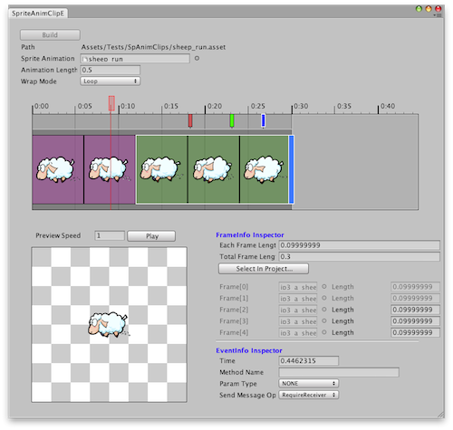
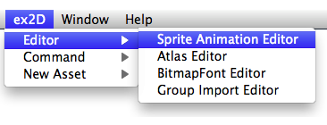
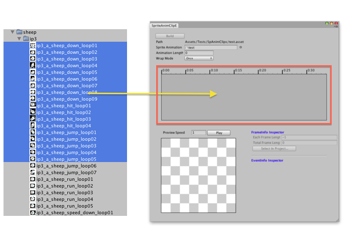
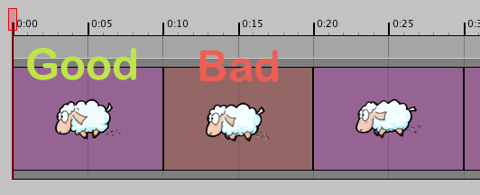
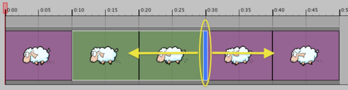
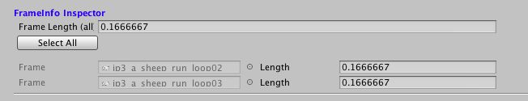
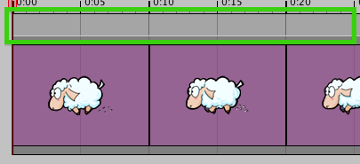
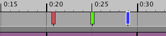
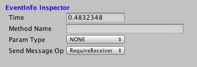

The Sprite Animation Editor in ex2D allows you create and modify Sprite Animation Clip Assets directly inside Unity3D.

Select a folder or file in Project Window. Right click the selected folder/file to popup the Menu. Choose Create → ex2D Sprite Animation Clip.
You will see a wizard popup help you create an Sprite Animation Clip:
| Option | Explanation |
|---|---|
| Saved Path | The saved directory path |
| Asset Name | The saved name of the new asset |
Click the Create button to create a new Sprite Animation Clip.
The Sprite Animation Editor can be opened from the ex2D→Editor→Sprite Animation Editor menu.

You can also open the atlas editor by select an Sprite Animation Clip you created, and click the Edit… button in the Inspector.
Select/Multi-Select Textures in Project Window, drag and drop them on the Timeline View Region in Sprite Animation Editor Window. The Sprite Animation Editor will add texture as Frame Info in Sprite Animation Clip.

After importing, you will see the texture show in the timeline view region. If the texture already store in Atlas, the background color of the frame will be magenta. If not yet in any Atlas, the color will be red, and you can not build this sprite animation clip when it includes Red frame. In other word, you must make sure all the imported texture already saved in Atlas.

When you select a single Frame or select multiple continue Frame, a blue button will show up at the end of the selected frames. This is the frame length resize handle, you can click and drag it to adjust frame length.

In the meantime, you will see the selected frame will be activated in the FrameInfo Inspector section. You are allow to change the frame length here either.

At the top of Timeline View Region, there is a bar. This is Event Info View Region, it allow user add/remove animation event in it.

When your mouse in the Event Info View Region, Double Click at the place you want to add Animation Event.

There are three different color to represent status of the Animation Event:
When select a single Animation Event, it will show some controllers in the EventInfo Inspector right below the Timeline View Region:

| Name | Description |
|---|---|
| Time | The time to triggered the event |
| Method Name | When the event triggered, the function name been passed in the SendMessage method |
| Param Type | The first parameter of the triggered Method (hide if choose NONE) |
| Send Message Options | The Send Message Options |
When you choose multiple Animation Event, only the time show for editing in the EventInfo Inspector
When we import the key frames, change frame info length and position, The Build button in Sprite Animation Editor will be activated. That means the Sprite Animation Clip is dirty and need rebuild. You can click the Build button or use the Hot Key Ctrl/Command + s to rebuild and save changes.
{kind=link}
{kind=link}